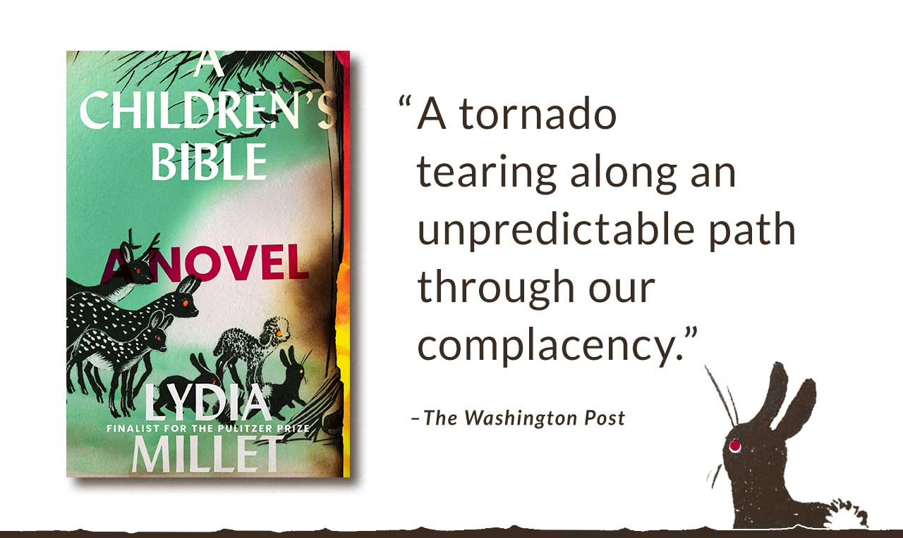

About Lydia Millet
Lydia Millet was born in Boston, Massachusetts, and raised in Toronto, Ontario, Canada. Millet attended Paul Valery University from 1987-1988 and the London School of Economics and Political Science in 1989. In 1990, she finished at the University of North Carolina at Chapel Hill, earning her Bachelor’s Degree in Interdisciplinary Studies. After graduating from Duke University with a Master’s Degree in Environmental Policy, Millet worked for the Natural Resources Defense Council for two years before joining the Center for Biological Diversity as a staff writer. Millet is best known for her dark sense of humor, stylistic versatility, and political bent. She has written more than a dozen novels and story collections, often about the ties between people and other animals.
More About Millet
Lydia Millet’s Homepage link to:https://lydiamillet.net
Lydia Millet on Twitter link to:https://twitter.com/lydia_millet
Lydia Millet on Facebook link to:https://www.facebook.com/lydia.millet.7
Heading Awards and Recognitions
• 2020 | National Book Awards Finalist for Fiction- A Children’s Bible
• 2019 | Award of Merit for the Short Story, American Academy of Arts and Letters- Fight No More
• 2012 | John Simon Guggenheim Memorial Foundation Fellowship
• 2012 | Los Angeles Times Book Prize finalist- Magnificence
• 2012 | National Book Critics Circle Award finalist- Magnificence
• 2010 | Pulitzer Prize finalist- Love in Infant Monkeys
• 2005 | Arthur C. Clark Award shortlist- Oh Pure and Radiant Heart
• 2003 | PEN Center USA Award for Fiction- My Happy Life

Interviews About A Children's Bible
• Chicago Review of Books: “Young Climate
Activists and the Language of God in A Children’s Bible”
link to: https://chireviewofbooks.com/2020/05/26/young-climate-activists-and-the-language-of-god-in-a-childrens-bible/
• LitHub: “Lydia Millet Wonders Why We’re Not Panicking More”
link to: https://lithub.com/lydia-millet-wonders-why-were-not-panicking-more/
• BookForum: “There Will Be Flood”
link to: https://www.bookforum.com/print/2702/lydia-millet-discusses-her-new-novel-of-teens-biblical-allusions-and-plausible-environmental-disaster-24048?fbclid=IwAR0PyJ85UrdQ1BucB8nbIznBmXfsjAOHxb7Ui7AX0lYBpcDqZI3NAhhYN2g
Other Interviews
• Spreaker / The Arik Korman Show (audio): “Lydia Millet on Writing a Psychological Thriller”
link to:https://www.spreaker.com/user/arik/lydia-millet-on-writing-a-psychological-
Works by Millet
• A Children’s Bible (2020) link to: https://www.thriftbooks.com/w/a-childrens-bible-a-novel_lydia-millet/23591687/#isbn=0393867382
• Fight No More: Stories (2018) link to: https://www.thriftbooks.com/w/fight-no-more-stories_lydia-millet/18595935/#isbn=039335704X
• Sweet Lamb of Heaven (2016) link to:https://www.thriftbooks.com/w/sweet-lamb-of-heaven_lydia-millet/9814583/#isbn=0393354180
• Mermaids in Paradise (2014) link to:https://www.thriftbooks.com/w/mermaids-in-paradise_lydia-millet/8853613/#isbn=0393351726
• Magnificence (2012) link to:https://www.thriftbooks.com/w/magnificence_lydia-millet/1251451/#isbn=0393346854
• Ghost Lights (2011) link to:https://www.thriftbooks.com/w/ghost-lights_lydia-millet/475305/#isbn=0393343456
• Love in Infant Monkeys: Stories (2009) link to: https://www.thriftbooks.com/w/love-in-infant-monkeys_lydia-millet/569586/#isbn=1593762526/
• How the Dead Dream (2008) link to:https://www.thriftbooks.com/w/how-the-dead-dream_lydia-millet/359743/#isbn=0099520753
• Everyone’s Pretty (2005) link to:https://www.thriftbooks.com/w/everyones-pretty-a-novel_lydia-millet/476163/#isbn=1932360778
• Oh Pure and Radiant Heart (2005) link to: https://www.thriftbooks.com/w/oh-pure-and-radiant-heart_lydia-millet/760156/#isbn=0156031035
• My Happy Life (2002) link to: https://www.thriftbooks.com/w/my-happy-life-a-novel_lydia-millet/562858/#isbn=1933368764
• George Bush, Dark Prince of Love: A Presidential Romance (2000) link to: https://www.thriftbooks.com/w/george-bush-dark-prince-of-love-a-presidential-romance_lydia-millet/817585/#isbn=0684862743
• Omnivores (1996) link to: https://www.thriftbooks.com/w/omnivores_lydia-millet/1132920/#isbn=0393635465
For Younger Readers
• The Bodies of the Ancients – The Dissenters Series, Book Three (2016) link to: https://www.thriftbooks.com/w/the-bodies-of-the-ancients_lydia--millet/11661901/#isbn=1618731289
• Pills and Starships (2014) link to: https://www.thriftbooks.com/w/pills-and-starships_lydia-millet/3194836/#isbn=1617752762
• The Shimmers in the Night – The Dissenters Series, Book Two (2012) link to: https://www.thriftbooks.com/w/the-shimmers-in-the-night_lydia-millet/3286441/#isbn=193152078X
• The Fires Beneath the Sea – The Dissenters Series, Book One (2011) link to: https://www.thriftbooks.com/w/the-fires-beneath-the-sea_lydia-millet/1012448/#isbn=193152047X
This page compiled by Cristina Borunda and Cadence Lopez.